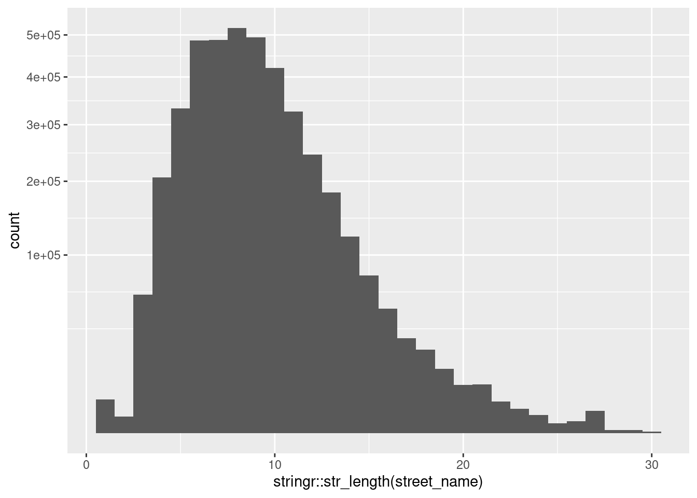

Last updated: 2021-01-12
Checks: 7 0
Knit directory:
fa_sim_cal/
This reproducible R Markdown analysis was created with workflowr (version 1.6.2). The Checks tab describes the reproducibility checks that were applied when the results were created. The Past versions tab lists the development history.
Great! Since the R Markdown file has been committed to the Git repository, you know the exact version of the code that produced these results.
Great job! The global environment was empty. Objects defined in the global environment can affect the analysis in your R Markdown file in unknown ways. For reproduciblity it’s best to always run the code in an empty environment.
The command set.seed(20201104) was run prior to running the code in the R Markdown file.
Setting a seed ensures that any results that rely on randomness, e.g.
subsampling or permutations, are reproducible.
Great job! Recording the operating system, R version, and package versions is critical for reproducibility.
Nice! There were no cached chunks for this analysis, so you can be confident that you successfully produced the results during this run.
Great job! Using relative paths to the files within your workflowr project makes it easier to run your code on other machines.
Great! You are using Git for version control. Tracking code development and connecting the code version to the results is critical for reproducibility.
The results in this page were generated with repository version 84d53a0. See the Past versions tab to see a history of the changes made to the R Markdown and HTML files.
Note that you need to be careful to ensure that all relevant files for the
analysis have been committed to Git prior to generating the results (you can
use wflow_publish or wflow_git_commit). workflowr only
checks the R Markdown file, but you know if there are other scripts or data
files that it depends on. Below is the status of the Git repository when the
results were generated:
Ignored files:
Ignored: .Rhistory
Ignored: .Rproj.user/
Ignored: .tresorit/
Ignored: data/VR_20051125.txt.xz
Ignored: output/ent_raw.fst
Ignored: renv/library/
Ignored: renv/staging/
Untracked files:
Untracked: analysis/01_get_check_data.Rmd.txt
Note that any generated files, e.g. HTML, png, CSS, etc., are not included in this status report because it is ok for generated content to have uncommitted changes.
These are the previous versions of the repository in which changes were made
to the R Markdown (analysis/01-3_check_resid.Rmd) and HTML (docs/01-3_check_resid.html)
files. If you’ve configured a remote Git repository (see
?wflow_git_remote), click on the hyperlinks in the table below to
view the files as they were in that past version.
| File | Version | Author | Date | Message |
|---|---|---|---|---|
| Rmd | 84d53a0 | Ross Gayler | 2021-01-12 | Add 01-3 check resid |
# Set up the project environment, because each Rmd file knits in a new R session
# so doesn't get the project setup from .Rprofile
# Project setup
library(here)
source(here::here("code", "setup_project.R"))── Attaching packages ─────────────────────────────────────── tidyverse 1.3.0 ──✓ ggplot2 3.3.3 ✓ purrr 0.3.4
✓ tibble 3.0.4 ✓ dplyr 1.0.2
✓ tidyr 1.1.2 ✓ stringr 1.4.0
✓ readr 1.4.0 ✓ forcats 0.5.0── Conflicts ────────────────────────────────────────── tidyverse_conflicts() ──
x dplyr::filter() masks stats::filter()
x dplyr::lag() masks stats::lag()# Extra set up for the 01*.Rmd notebooks
source(here::here("code", "setup_01.R"))
Attaching package: 'glue'The following object is masked from 'package:dplyr':
collapse# Extra set up for this notebook
# ???
# start the execution time clock
tictoc::tic("Computation time (excl. render)")The 01*.Rmd notebooks read the data, filter it to the subset to be
used for modelling, characterise it to understand it, check for possible
gotchas, clean it, and save it for the analyses proper.
This notebook (01-3_check_resid) characterises the residence variables
in the saved subset of the data. These are the residential address and
the phone number (which is tied to the address if the telephone is a
land-line).
We have no intention of using the residence variables as predictors for entity resolution. However, they may be of use for manually checking the results of entity resolution. Consequently, the checking done here is minimal.
Define the residence variables.
vars_resid <- c(
"unit_num", "house_num",
"half_code", "street_dir", "street_name", "street_type_cd", "street_sufx_cd",
"res_city_desc", "state_cd", "zip_code",
"area_cd", "phone_num"
)Read the usable data. Remember that this consists of only the ACTIVE & VERIFIED records.
# Show the entity data file location
# This is set in code/file_paths.R
f_entity_fst[1] "/home/ross/RG/projects/academic/entity_resolution/fa_sim_cal_TOP/fa_sim_cal/output/ent_raw.fst"# get data for next section of analyses
d <- fst::read_fst(
f_entity_fst,
columns = vars_resid
) %>%
tibble::as_tibble()
dim(d)[1] 4099699 12Look at some examples.
Residential address:
d %>%
dplyr::select(unit_num : zip_code) %>%
dplyr::slice_sample(n = 20) %>%
knitr::kable()| unit_num | house_num | half_code | street_dir | street_name | street_type_cd | street_sufx_cd | res_city_desc | state_cd | zip_code |
|---|---|---|---|---|---|---|---|---|---|
| NA | 2883 | NA | NA | EASY | ST | NA | DUNN | NC | 28334 |
| NA | 665 | NA | NA | MOUNT OLIVE CHURCH | RD | NA | FRANKLINTON | NC | 27525 |
| NA | 417 | NA | NA | EDINBURGH | DR | NA | FAYETTEVILLE | NC | 28303 |
| NA | 2517 | NA | NA | KERR | AVE | N | WILMINGTON | NC | 28405 |
| NA | 2337 | NA | NA | CLEVELAND | AVE | NA | FAYETTEVILLE | NC | 28312 |
| NA | 9435 | NA | NA | NC HWY 87 | NA | N | PITTSBORO | NC | 27312 |
| NA | 215 | NA | NA | ORANGE | ST | NA | ROCKY MOUNT | NC | 27801 |
| A317 | 733 | NA | NA | PLANTATION ESTATES | DR | NA | MATTHEWS | NC | 28105 |
| 2 | 5311 | NA | NA | 25 70 | HWY | NA | MARSHALL | NC | 28753 |
| NA | 424 | NA | N | KING | ST | NA | ST PAULS | NC | 28384 |
| NA | 13429 | NA | NA | OLD STAGE | RD | NA | WILLOW SPRINGS | NC | 27592 |
| D | 3247 | NA | NA | CYPRESS PARK | RD | NA | GREENSBORO | NC | 27407 |
| NA | 9925 | NA | NA | PALLISERS | TER | NA | CHARLOTTE | NC | 28210 |
| NA | 114 | NA | NA | GIBBS | RD | NA | NEW BERN | NC | 28560 |
| NA | 8885 | NA | NA | ROCKY RIVER | RD | NA | HARRISBURG | NC | 28075 |
| A | 105 | NA | NA | TAMALPAIS | PT | NA | CHAPEL HILL | NC | 27514 |
| NA | 102 | NA | N | ROXFORD | RD | NA | KINGS MOUNTAIN | NC | 28086 |
| NA | 551 | NA | NA | NICK MCLEAN | RD | NA | BUNNLEVEL | NC | 28323 |
| NA | 2913 | NA | NA | WINDSOR | AVE | NA | CHARLOTTE | NC | 28209 |
| NA | 2200 | NA | NA | GRESHAM LAKE | RD | NA | RALEIGH | NC | 27615 |
Telephone number:
d %>%
dplyr::select(area_cd : phone_num) %>%
dplyr::slice_sample(n = 20) %>%
knitr::kable()| area_cd | phone_num |
|---|---|
| 252 | 5364553 |
| 252 | 5235950 |
| NA | NA |
| 828 | 9269783 |
| 910 | 5755969 |
| NA | NA |
| NA | NA |
| NA | NA |
| NA | NA |
| 704 | 8065796 |
| NA | NA |
| 704 | 3920844 |
| NA | NA |
| 828 | 6705254 |
| 252 | 7474543 |
| 252 | 6366840 |
| NA | NA |
| NA | NA |
| NA | NA |
| 910 | 8924300 |
unit_num Residential address unit number
house_num Residential address street number
half_code Residential address street number half code
d %>%
dplyr::select(unit_num, house_num, half_code) %>%
skimr::skim()Warning in grepl("^\\s+$", x): input string 13013 is invalid in this localeWarning in grepl("^\\s+$", x): input string 27075 is invalid in this localeWarning in grepl("^\\s+$", x): input string 35910 is invalid in this localeWarning in grepl("^\\s+$", x): input string 40713 is invalid in this localeWarning in grepl("^\\s+$", x): input string 49523 is invalid in this locale| Name | Piped data |
| Number of rows | 4099699 |
| Number of columns | 3 |
| _______________________ | |
| Column type frequency: | |
| character | 3 |
| ________________________ | |
| Group variables | None |
Variable type: character
| skim_variable | n_missing | complete_rate | min | max | empty | n_unique | whitespace |
|---|---|---|---|---|---|---|---|
| unit_num | 3755239 | 0.08 | 1 | 7 | 0 | 16116 | 0 |
| house_num | 0 | 1.00 | 1 | 6 | 0 | 27534 | 0 |
| half_code | 4088996 | 0.00 | 1 | 1 | 0 | 41 | 0 |
unit_num 8% filled
house_num 100% filled
half_code 0.3% filled
Look at half_code.
table(d$half_code, useNA = "ifany")
- / ` + \xab \xbd 0 1 2 3
1 8 5 32 3 1730 1 44 35 5
4 5 6 7 8 9 A B C D
10 6 6 5 4 1 3313 2725 948 569
E F G H I J K L M N
273 214 154 174 36 78 58 48 48 33
O P Q R S T U V W X
6 21 7 13 38 13 3 6 24 4
Y <NA>
1 4088996 d %>%
dplyr::filter(!is.na(half_code)) %>%
dplyr::select(unit_num : street_type_cd) %>%
dplyr::slice_sample(n = 20)# A tibble: 20 x 6
unit_num house_num half_code street_dir street_name street_type_cd
<chr> <chr> <chr> <chr> <chr> <chr>
1 <NA> 640 "\xab" N LOUISIANA AVE
2 <NA> 21 "B" <NA> SPICEWOOD RD
3 <NA> 803 "C" <NA> DOUGLAS DR
4 <NA> 601 "B" W GRAHAM ST
5 <NA> 102 "\xbd" <NA> FAIRWAY DR
6 A 141 "A" <NA> HERRON AVE
7 <NA> 795 "\xbd" <NA> HENDERSONVILLE RD
8 <NA> 1005 "C" <NA> EAST ST
9 <NA> 2840 "D" <NA> ROGERS RD
10 <NA> 717 "C" <NA> DEEP FORD RD
11 <NA> 3211 "A" <NA> BIG WOODS RD
12 <NA> 626 "A" <NA> LUMBEE ST
13 <NA> 910 "D" <NA> CULBRETH AVE
14 <NA> 155 "B" <NA> HIBRITEN MOUNTAIN RD
15 <NA> 901 "B" <NA> OAKLAWN DR
16 <NA> 1314 "A" <NA> BEAVER CREEK SCHOOL RD
17 <NA> 100 "A" <NA> CIRCLE CT
18 <NA> 301 "`" <NA> CHAMPION DR
19 <NA> 21 "B" <NA> MASTERS COURT DR
20 <NA> 114 "D" <NA> SPRUCE HILL LN half_code appears to indicate where there are multiple buildings on
one street-numbered block. Typical values would be A, B, …
d %>%
dplyr::select(starts_with("street_")) %>%
skimr::skim()| Name | Piped data |
| Number of rows | 4099699 |
| Number of columns | 4 |
| _______________________ | |
| Column type frequency: | |
| character | 4 |
| ________________________ | |
| Group variables | None |
Variable type: character
| skim_variable | n_missing | complete_rate | min | max | empty | n_unique | whitespace |
|---|---|---|---|---|---|---|---|
| street_dir | 3812561 | 0.07 | 1 | 2 | 0 | 8 | 0 |
| street_name | 7 | 1.00 | 1 | 30 | 0 | 83244 | 0 |
| street_type_cd | 154594 | 0.96 | 2 | 4 | 0 | 119 | 0 |
| street_sufx_cd | 3941004 | 0.04 | 1 | 3 | 0 | 11 | 0 |
street_dir 7% filledstreet_name ~100% filled (7 missing)street_type_cd 96% filledstreet_sufx_cd 4% filledstreet_dir Residential address street direction (N,S,E,W,NE,SW, etc.)
table(d$street_dir, useNA = "ifany")
E N NE NW S SE SW W <NA>
71244 72784 2161 911 68612 1221 729 69476 3812561 street_name Residential address street name
Seven records are missing street name. Look at them.
d %>%
dplyr::filter(is.na(street_name)) %>%
knitr::kable()| unit_num | house_num | half_code | street_dir | street_name | street_type_cd | street_sufx_cd | res_city_desc | state_cd | zip_code | area_cd | phone_num |
|---|---|---|---|---|---|---|---|---|---|---|---|
| NA | 0 | NA | NA | NA | NA | NA | STONY POINT | NC | 28678 | NA | NA |
| NA | 0 | NA | NA | NA | NA | NA | NA | NA | NA | NA | NA |
| NA | 0 | NA | NA | NA | NA | NA | NA | NA | NA | NA | NA |
| NA | 0 | NA | NA | NA | NA | NA | NA | NA | NA | NA | NA |
| NA | 0 | NA | NA | NA | NA | NA | NA | NA | NA | NA | NA |
| NA | 0 | NA | NA | NA | NA | NA | NA | NA | NA | NA | NA |
| NA | 0 | NA | NA | NA | NA | NA | BELMONT | NC | 28012 | NA | NA |
Some street names are very short. Look at the distribution of length of street name.
summary(stringr::str_length(d$street_name)) Min. 1st Qu. Median Mean 3rd Qu. Max. NA's
1.00 6.00 8.00 8.78 11.00 30.00 7 d %>%
ggplot() +
geom_histogram(aes(x = stringr::str_length(street_name)), binwidth = 1) +
scale_y_sqrt()Warning: Removed 7 rows containing non-finite values (stat_bin).
Look at examples of short street names.
d %>%
dplyr::filter(stringr::str_length(street_name) == 1) %>%
dplyr::select(starts_with("street_"), res_city_desc) %>%
dplyr::slice_sample(n = 20) %>%
knitr::kable()| street_dir | street_name | street_type_cd | street_sufx_cd | res_city_desc |
|---|---|---|---|---|
| NA | C | ST | NA | NEWPORT |
| W | C | ST | NA | ERWIN |
| NA | A | ST | NA | CAMP LEJEUNE |
| E | I | ST | NA | ERWIN |
| NA | F | AVE | NA | KURE BEACH |
| NA | A | ST | NA | LANSING |
| E | K | ST | NA | ERWIN |
| E | C | ST | NA | BUTNER |
| NA | D | ST | NA | SPRING LAKE |
| NA | B | AVE | NA | CHARLOTTE |
| E | B | ST | NA | BUTNER |
| W | B | ST | NA | KANNAPOLIS |
| E | C | ST | NA | BUTNER |
| E | L | ST | NA | ERWIN |
| NA | A | ST | NA | CAMP LEJEUNE |
| NA | E | ST | NA | NORTH WILKESBORO |
| NA | J | AVE | NA | KURE BEACH |
| W | C | ST | NA | BUTNER |
| E | J | ST | NA | MAIDEN |
| NA | E | ST | NA | NORTH WILKESBORO |
d %>%
dplyr::filter(stringr::str_length(street_name) == 2) %>%
dplyr::select(starts_with("street_"), res_city_desc) %>%
dplyr::slice_sample(n = 20) %>%
knitr::kable()| street_dir | street_name | street_type_cd | street_sufx_cd | res_city_desc |
|---|---|---|---|---|
| NA | DJ | DR | NA | BENSON |
| NA | KY | FLDS | NA | WEAVERVILLE |
| NA | 63 | HWY | NA | LEICESTER |
| NA | KY | FLDS | NA | WEAVERVILLE |
| NA | OW | LN | NA | DUNN |
| N | ST | NA | NA | ASHEVILLE |
| NA | KY | FLDS | NA | WEAVERVILLE |
| NA | RH | RD | NA | HICKORY |
| NA | 23 | HWY | NA | MARS HILL |
| NA | DJ | DR | NA | STATESVILLE |
| NA | CY | CIR | NA | CONCORD |
| NA | JR | RD | NA | TIMBERLAKE |
| NA | WR | LN | NA | CLAREMONT |
| NA | 63 | HWY | NA | LEICESTER |
| NA | 19 | HWY | NA | MARS HILL |
| NA | JR | RD | NA | TIMBERLAKE |
| NA | 23 | HWY | NA | MARS HILL |
| NA | AA | DR | NA | TAYLORSVILLE |
| NA | BR | DR | NA | MARION |
| NA | RH | RD | NA | HICKORY |
I checked some of these examples against a map.
Look at examples of long street names.
d %>%
dplyr::filter(stringr::str_length(street_name) >= 28) %>%
dplyr::select(starts_with("street_"), res_city_desc) %>%
dplyr::distinct(.keep_all = TRUE) %>%
dplyr::arrange(street_name) %>%
knitr::kable()| street_dir | street_name | street_type_cd | street_sufx_cd | res_city_desc |
|---|---|---|---|---|
| NA | BROOKFIELD RETIREMENT CENTER | NA | NA | LILLINGTON |
| NA | CROSS MEMORIAL BAPTIST CHURCH | LOOP | NA | MARION |
| NA | KINGSDALE MANOR NURSING CENTER | NA | NA | LUMBERTON |
| NA | LOMBARDY VILLAGE MOBILE HOME | PARK | NA | LUMBERTON |
| NA | LOMBARDY VILLAGE MOBILE HOME | PARK | NA | SHANNON |
| NA | LOMBARDY VILLAGE MOBILE HOME | PARK | NA | REX |
| NA | NC HWY 197N NEAR COVY ROCK CHU | NA | NA | BURNSVILLE |
| NA | OLD TAMMANY-OINE ROOKER DAIRY | RD | NA | NORLINA |
| NA | SWEPSONVILLE-METHODIST CHURCH | RD | NA | GRAHAM |
| NA | WHEELING VILLAGE TRAILER PARK | NA | NA | WINSTON SALEM |
| NA | WILDLIFE RECREATION AREA ACC | RD | NA | LEXINGTON |
| NA | WISE-FIVE FORKS- ROBERSON FERR | NA | NA | MACON |
Long street names are multi-word phrases
street_type_cd Residential address street type (RD, ST, DR, BLVD,
etc.)
table(d$street_type_cd, useNA = "ifany")
ALY ANX ARC AVE BCH BLF BLVD BND BR BRG
266 23 7 207808 1 47 27022 250 166 7
BRK BTM BYP CIR CLB CMN CMNS COR COVE CRES
56 1 1205 99489 18 28 20 44 3 534
CRK CRSE CRST CSWY CT CTR CV DL DM DORM
141 8 12 22 249682 15 2527 4 1 1756
DR EST ESTS EXPY EXT FALL FLDS FLS FLT FLTS
926884 457 203 18 4931 2 64 19 8 4
FRD FRK FRST FT FWY GDN GDNS GLN GRN GRV
9 13 22 1 4 6 110 61 6 94
HBR HL HLS HOLW HTS HVN HWY IS JCT KNL
38 513 261 200 1684 24 44189 19 6 162
KNLS LAND LDG LK LKS LN LNDG LOOP MDW MDWS
51 2 6 51 16 347932 371 9505 2 37
MEWS MHP MNR MTN ORCH OVAL PARK PASS PATH PKWY
102 2 222 78 7 2 2013 171 1035 6665
PL PLZ PNES PSGE PT RAMP rd RD RDG ROW
82253 211 21 21 2263 1 1 1287597 2124 333
RST RTE RUN SHR SHRS SMT SPG SPGS SPUR SQ
2 2731 5219 3 33 11 6 32 58 1169
ST STA TER TPKE TRAK TRCE TRL TRLR VIA VIS
512983 9 7959 13 10 1319 44565 26 2 60
VL VLG VLY VW WALK WAY WYND XING XRDS <NA>
1 991 67 217 581 51625 328 652 163 154594 street_sufx_cd Residential address street suffix (BUS, EXT, and
directional)
table(d$street_sufx_cd, useNA = "ifany")
BUS E EXT I N NE NW S SE SW
169 13021 1481 1 17869 24755 29472 18870 13095 26587
W <NA>
13375 3941004 res_city_desc Residential address city name
state_cd Residential address state code
zip_code Residential address zip code
d %>%
dplyr::select(res_city_desc : zip_code) %>%
skimr::skim()| Name | Piped data |
| Number of rows | 4099699 |
| Number of columns | 3 |
| _______________________ | |
| Column type frequency: | |
| character | 3 |
| ________________________ | |
| Group variables | None |
Variable type: character
| skim_variable | n_missing | complete_rate | min | max | empty | n_unique | whitespace |
|---|---|---|---|---|---|---|---|
| res_city_desc | 19 | 1 | 3 | 20 | 0 | 783 | 0 |
| state_cd | 18 | 1 | 2 | 2 | 0 | 5 | 0 |
| zip_code | 21 | 1 | 5 | 9 | 0 | 902 | 0 |
res_city_desc ~100% filled (19 missing)state_cd ~100% filled (19 missing)zip_code ~100% filled (19 missing)Look at the addresses with any missing locality variable.
d %>%
dplyr::filter(is.na(res_city_desc) | is.na(state_cd) | is.na(zip_code)) %>%
dplyr::select(house_num : zip_code) %>%
dplyr::distinct(.keep_all = TRUE) %>%
dplyr::arrange(state_cd, res_city_desc, zip_code) %>%
knitr::kable()| house_num | half_code | street_dir | street_name | street_type_cd | street_sufx_cd | res_city_desc | state_cd | zip_code |
|---|---|---|---|---|---|---|---|---|
| 5189 | NA | NA | COVE | RD | NA | MARION | NC | NA |
| 5030 | NA | NA | COVE | RD | NA | MARION | NC | NA |
| 0 | NA | NA | H & N MOBILE HOME | PARK | NA | NA | NC | NA |
| 0 | NA | NA | UNKNOWN | NA | NA | NA | NC | NA |
| 1407 | NA | NA | OVERLOOK | DR | NA | LENOIR | NA | 28645 |
| 0 | NA | NA | CONFIDENTIAL | NA | NA | NA | NA | NA |
| 0 | NA | NA | NA | NA | NA | NA | NA | NA |
state_cd Residential address state code
table(d$state_cd, useNA = "ifany")
GA NC SC TN VA <NA>
13 4099631 1 29 7 18 Residential state codes are almost entirely Georgia
zip_code Residential address zip code
The zip codes are not all the same length. Look at the distribution of length of zip code
table(stringr::str_length(d$zip_code), useNA = "ifany")
5 9 <NA>
4099667 11 21 Look at the 9-digit zip codes.
d %>%
dplyr::filter(stringr::str_length(zip_code) == 9) %>%
dplyr::select(street_name : zip_code) %>%
dplyr::arrange(zip_code) %>%
knitr::kable()| street_name | street_type_cd | street_sufx_cd | res_city_desc | state_cd | zip_code |
|---|---|---|---|---|---|
| ECHO | LN | NA | SANFORD | NC | 273308492 |
| UNKNOWN | NA | NA | LILLINGTON | NC | 275468949 |
| LINCOLN MCKAY | DR | NA | LILLINGTON | NC | 275469001 |
| SMITH | ST | NA | ALBEMARLE | NC | 280014351 |
| INDIAN MOUND | RD | NA | ALBEMARLE | NC | 280019245 |
| POND | ST | NA | ALBEMARLE | NC | 280019766 |
| NC 731 HWY | NA | NA | NORWOOD | NC | 281289420 |
| FRIENDLY MCLEOD | LN | NA | DUNN | NC | 283349250 |
| BEAVER DAM | RD | NA | ERWIN | NC | 283399790 |
| WIRE | RD | NA | LINDEN | NC | 283569413 |
| WALKER | RD | NA | LINDEN | NC | 283569416 |
Computation time (excl. render): 29.517 sec elapsed
sessionInfo()R version 4.0.3 (2020-10-10)
Platform: x86_64-pc-linux-gnu (64-bit)
Running under: Ubuntu 20.10
Matrix products: default
BLAS: /usr/lib/x86_64-linux-gnu/blas/libblas.so.3.9.0
LAPACK: /usr/lib/x86_64-linux-gnu/lapack/liblapack.so.3.9.0
locale:
[1] LC_CTYPE=en_AU.UTF-8 LC_NUMERIC=C
[3] LC_TIME=en_AU.UTF-8 LC_COLLATE=en_AU.UTF-8
[5] LC_MONETARY=en_AU.UTF-8 LC_MESSAGES=en_AU.UTF-8
[7] LC_PAPER=en_AU.UTF-8 LC_NAME=C
[9] LC_ADDRESS=C LC_TELEPHONE=C
[11] LC_MEASUREMENT=en_AU.UTF-8 LC_IDENTIFICATION=C
attached base packages:
[1] stats graphics grDevices datasets utils methods base
other attached packages:
[1] hexbin_1.28.2 glue_1.4.2 knitr_1.30 skimr_2.1.2
[5] fst_0.9.4 forcats_0.5.0 stringr_1.4.0 dplyr_1.0.2
[9] purrr_0.3.4 readr_1.4.0 tidyr_1.1.2 tibble_3.0.4
[13] ggplot2_3.3.3 tidyverse_1.3.0 tictoc_1.0 here_1.0.1
[17] workflowr_1.6.2
loaded via a namespace (and not attached):
[1] Rcpp_1.0.5 lattice_0.20-41 lubridate_1.7.9.2 utf8_1.1.4
[5] assertthat_0.2.1 rprojroot_2.0.2 digest_0.6.27 repr_1.1.0
[9] R6_2.5.0 cellranger_1.1.0 backports_1.2.1 reprex_0.3.0
[13] evaluate_0.14 highr_0.8 httr_1.4.2 pillar_1.4.7
[17] rlang_0.4.10 readxl_1.3.1 rstudioapi_0.13 whisker_0.4
[21] rmarkdown_2.6 labeling_0.4.2 munsell_0.5.0 broom_0.7.3
[25] compiler_4.0.3 httpuv_1.5.4 modelr_0.1.8 xfun_0.20
[29] base64enc_0.1-3 pkgconfig_2.0.3 htmltools_0.5.0 tidyselect_1.1.0
[33] bookdown_0.21 fansi_0.4.1 crayon_1.3.4 dbplyr_2.0.0
[37] withr_2.3.0 later_1.1.0.1 grid_4.0.3 jsonlite_1.7.2
[41] gtable_0.3.0 lifecycle_0.2.0 DBI_1.1.0 git2r_0.28.0
[45] magrittr_2.0.1 scales_1.1.1 cli_2.2.0 stringi_1.5.3
[49] farver_2.0.3 renv_0.12.5 fs_1.5.0 promises_1.1.1
[53] xml2_1.3.2 ellipsis_0.3.1 generics_0.1.0 vctrs_0.3.6
[57] tools_4.0.3 hms_0.5.3 parallel_4.0.3 yaml_2.2.1
[61] colorspace_2.0-0 rvest_0.3.6 haven_2.3.1